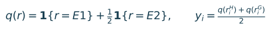
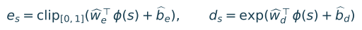
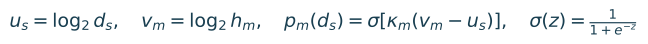
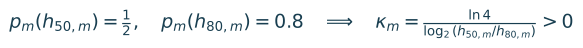
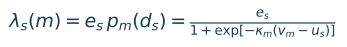
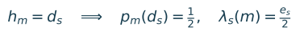
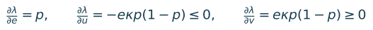
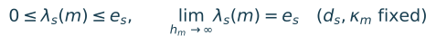
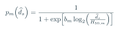
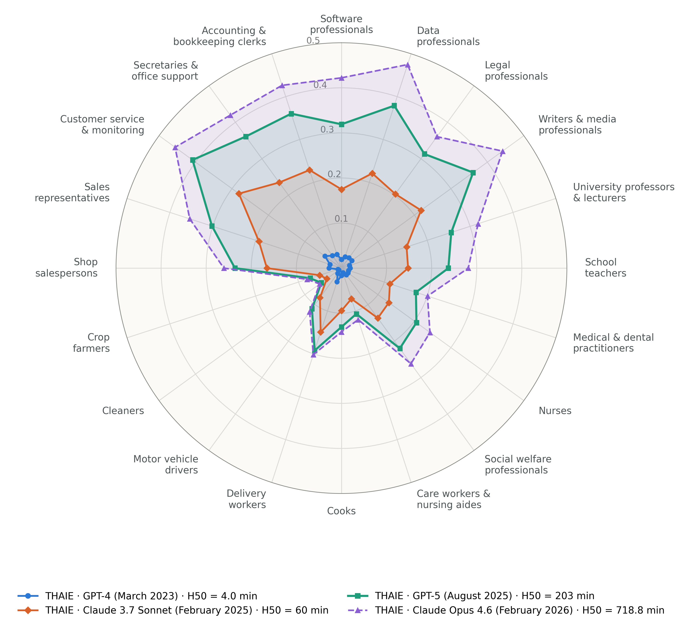

Time-horizon AI exposure with labour market evidence from Korea and the United States
Journal manuscript, submitted November 2026. This page presents the measure, the main findings and the data explorer.
Abstract
AI exposure measures how much of a job AI can do, and the most widely used measure, Eloundou β, asks whether a large language model could help a worker finish a task at least twice as fast. However, it does not ask how hard the task is to finish, which shows in the time a human needs. As a result, a ten-minute task and a ten-hour task can receive the same score, and the measure cannot show which tasks come within reach as AI technology evolves to complete ever longer tasks. This study therefore introduces Time-Horizon AI Exposure (THAIE), which weights Eloundou β by model completion curves evaluated at human task durations. THAIE reorders highly exposed occupations in Korea, because tasks with higher Eloundou β tend to be longer. Within this group, a one-standard-deviation increase in THAIE is associated with a trend-adjusted post-2022 employment difference of −4.3 log points (p<0.001), whereas Eloundou β shows no detectable break (p=0.38). Exposed employment nevertheless expanded, because gains among older workers outweighed losses among workers under 30. In an exploratory comparison, replacing Eloundou β with THAIE also reduces prediction error by 5.3 percent in Korea and 8.2 percent in the United States. Task duration thus adds information that existing measures miss, and THAIE offers a refinement of potential exposure that can be updated as AI technology advances, rather than a causal estimate of displacement.
What is Time-Horizon AI Exposure?
THAIE combines baseline time-saving potential, task difficulty represented by estimated human completion time, and model completion capability characterised by a benchmark completion curve. It weights the baseline task score (Eloundou β, the rater-averaged β rating of Eloundou et al., 2024) by a completion factor that relates the task’s estimated human duration to the model’s completion curve.
E5-based scores define the paper’s original occupational ranking and high-exposure group. BGE-M3-based models supply both the transferred Eloundou β score and the human-duration estimate used in THAIE. The baseline score records whether LLM-based assistance could halve human completion time at equivalent quality; it is not semantic similarity, a saving percentage or a success probability. Scores are averaged within dictionary entries, then occupations.
Research question Should a 30-minute task and a 20-hour task receive the same score once both are judged feasible with AI?
Time-saving potential, task difficulty and model completion capability
THAIE는 기존 평가에 따른 시간 단축성, 인간의 예상 수행시간으로 나타낸 과업 난이도, 벤치마크 완료 곡선으로 나타낸 모델의 완수 역량을 결합한 지표다. 과업의 예상 수행시간과 모델의 완료 곡선 사이의 관계에서 계산한 완료 계수로 기존 과업 평가 점수를 가중한다.
Conceptual illustration with hypothetical coordinates. The horizon–duration equality plane gives p = 0.5. An upward change in the horizon holds the baseline score, task duration and curve slope fixed. Orthogonal coordinates do not imply statistical independence or meaningful vector distances.
Mathematical explanation and evidence · 수리적 설명과 근거
Use the English / 한국어 buttons above to switch the explanation. Small screens can scroll each equation horizontally.
The source model and the THAIE weighting rule
There are three distinct ingredients. The category score comes from Eloundou and colleagues; the duration-dependent logistic curve comes from METR; multiplying the two is this study’s modelling choice. It is not a formula established by either source.
1. Baseline time-saving potential
Eloundou’s β coding assigns E1 a score of 1, E2 a score of 0.5 and E0 a score of 0. E1 concerns halving time at equivalent quality using direct LLM access; E2 requires additional LLM-based applications. The 0.5 is a category weight, not a 50% saving rate. See source 1, §3.3 and Appendix A.1.

In our retained implementation, H and G identify the human and GPT-4 ratings. Their mean is the training label. Embedding-based ridge regressions predict the target task’s score and log human duration, with d expressed in minutes. These transfer and estimation steps belong to our study, rather than Eloundou’s original index.

2. METR’s benchmark completion curve
Kwa, West and colleagues fit agent success against log human completion time using a logistic curve in source 2, §3.1, p. 5. With our base-2 notation, the same functional family becomes

The logarithm base changes the numerical slope, not the curve family. h is the 50% horizon and κ controls steepness. Our code calibrates κ from the retained 50% and 80% horizons. This follows by setting the log-odds at h80 equal to ln(0.8/0.2) = ln 4. METR provides the horizon relation in source 3, “Refresher”.

3. THAIE combines the baseline score and the transferred curve

This is a weighting rule, not a joint-probability identity. It links an assessment of human time savings with an autonomous-agent benchmark. That transfer is a substantive assumption. It does not establish workplace success probabilities or statistical independence of the three inputs.
4. Why the plane and arrow appear in the graph


The derivatives hold other coordinates and positive κ fixed. They justify the illustrative arrow and the duration gradient, rather than an empirical causal effect. If real models have different slopes, their curves can cross; a larger 50% horizon alone does not guarantee a larger factor for every task.

These algebraic results are derived here from the stated formula. They do not validate the choice of the formula. In particular, an e = 0 baseline remains zero under this weighting.
Interpretation limit. Human duration proxies difficulty and scope rather than measuring cognitive complexity directly. METR explains that this proxy must predict AI difficulty within the relevant domain and need not do so in every domain. See source 4, “Soundness of the time horizon metric”. Our transferred factor therefore remains a benchmark-based coefficient, not a directly validated workplace success probability.
What the algebra and employment evidence establish
The derivatives describe the chosen score under fixed inputs; they are not evidence that this functional form is empirically superior. The manuscript’s duration-only and alternative-weight comparisons support the temporal distinction without selecting a uniquely informative curve. The conceptual axes need not be statistically independent.
Fixing the GPT-4 horizon fixes a capability reference, not the vintage of every input. Human-duration labels released in 2026 enter the earlier employment comparisons retrospectively. Cross-encoder checks show persistence across tested prediction specifications; they do not identify independent label noise or an upper bound on shared-encoder effects.
외부 연구의 수식과 THAIE의 가중 규칙
세 부분을 구분해야 합니다. 범주별 기존 점수는 Eloundou 연구에, 시간에 따른 로지스틱 완료 곡선은 METR에 근거합니다. 두 값을 곱하는 것은 우리 연구의 모형화 선택이며, 두 선행연구가 이 결합식을 입증한 것은 아닙니다.
1. 기존 시간 단축성 점수
Eloundou의 β는 E1에 1, E2에 0.5, E0에 0을 부여합니다. E1은 같은 품질에서 LLM을 직접 활용해 시간을 절반 이상 줄일 수 있는지, E2는 추가 LLM 기반 소프트웨어가 필요한지를 판정합니다. 0.5는 절감률이 아닌 범주 가중치입니다. 근거 1의 3.3절·부록 A.1을 참조할 수 있습니다.
우리 코드의 H와 G는 인간·GPT-4 평정입니다. 이들의 수치화된 평균을 학습 라벨로 쓰고 임베딩 기반 릿지 회귀로 대상 과업의 점수와 로그 인간 수행시간을 예측합니다. d의 단위는 분입니다. 이 평균·전이 절차는 우리 구현이며 Eloundou의 원래 지표와 구분합니다.
2. METR의 벤치마크 완료 곡선
Kwa·West 등의 근거 2, 3.1절·5쪽은 인간 수행시간의 로그와 에이전트 성공률을 로지스틱 곡선으로 연결합니다. 이를 우리 원고의 밑이 2인 로그로 쓰면 다음과 같습니다.
로그 밑을 바꾸면 기울기의 수치가 달라지지만 곡선의 형태는 같습니다. h는 50% 시간지평이고 κ는 곡선의 가파름입니다. 우리 코드는 보존된 50%·80% 시간지평에서 κ를 계산합니다. h80의 로그 오즈가 ln(0.8/0.2) = ln 4라는 조건에서 아래 식을 얻습니다. 근거 3의 모형 설명에도 시간지평 간 관계가 제시됩니다.
3. THAIE의 결합식
이 식은 가중 규칙이며 결합확률의 항등식이 아닙니다. 인간의 AI 활용에 따른 시간 단축 평가와 에이전트 단독 완수 벤치마크를 연결한다는 별도 가정이 필요합니다. 실제 직장 성공확률이나 입력의 통계적 독립성을 입증하지 않습니다.
4. 평면과 화살표의 수리적 의미
다른 좌표와 양의 기울기 κ를 고정한 편미분입니다. 개념도의 화살표와 시간에 따른 가중 방향을 설명하지만 인과효과를 뜻하지는 않습니다. 실제 모델별 기울기가 다르면 곡선이 교차할 수 있어 50% 시간지평이 크다는 이유만으로 모든 과업의 완료 계수가 더 크다고 할 수 없습니다.
이 성질은 명시한 식에서 여기서 유도한 결과이며, 결합식의 타당성을 외부 연구가 검증했다는 뜻은 아닙니다. 특히 기존 점수 e가 0이면 이 가중 후에도 0입니다.
해석의 한계. 인간 수행시간은 난이도와 작업 범위의 대리변수이며 인지적 복잡성을 직접 측정하지 않습니다. METR도 이 시간이 해당 영역에서 AI의 난이도를 예측해야 하며 모든 영역에 같은 관계가 성립한다고 볼 수 없다고 설명합니다. 근거 4의 지표 타당성 절을 참조할 수 있습니다. 완료 계수는 실제 직장 과업에서 직접 검증한 성공확률이 아닙니다.
수학적 성질과 고용 분석이 뒷받침하는 범위
편미분은 입력을 고정했을 때 선택한 점수의 성질을 나타냅니다. 함수 자체의 실증적 우월성을 뜻하지 않습니다. 원고의 수행시간 단독 및 대체 가중 비교는 시간 차원의 의미를 뒷받침하지만 하나의 곡선만이 유효하다고 식별하지는 못합니다. 세 개념 축도 통계적으로 독립일 필요는 없습니다.
GPT-4 지평을 고정하는 것은 역량 기준을 고정하는 것이며 모든 입력을 과거에 확정하는 것은 아닙니다. 2026년에 발표된 인간 수행시간 라벨이 과거 고용 비교에 후향적으로 들어갑니다. 인코더를 바꾼 실험은 시험한 예측 명세에서도 연관이 유지됨을 보이지만, 독립 잡음이나 공유 인코더 효과의 상한을 식별하지는 못합니다.
The equations use common notation for comparison. The β category weight is distinct from METR’s slope parameter, denoted κ here. This explanation documents the retained manuscript construction and does not update benchmark inputs, scores or empirical estimates.
λs(m) = es × pm(ds; hm, κm)
The completion factor transfers a benchmark relationship to occupational tasks; it is not a directly validated probability of success in actual workplaces.
완료 계수는 벤치마크 관계를 직업 과업에 이전한 값이며, 실제 직장 과업에서 직접 검증한 성공확률이 아니다.
Why the time-saving rating does not capture task length · 시간 단축 기준이 과업 길이를 담지 못하는 이유
a, The rating criterion is proportional. b, Mean exposure rating by decile of estimated human duration in the O*NET source labels; bars are 95% intervals. 한국어 그림 · PDF
The baseline rating asks whether LLM assistance halves a task’s completion time at equivalent quality. Because the criterion is proportional, a 10-minute task reduced to 5 minutes and a 10-hour task reduced to 5 hours both receive E1 and a score of 1 (panel a). The rating therefore does not register how long or extensive a task is. If it had absorbed task difficulty, longer tasks would be rated as less exposed. The O*NET source labels show the reverse. Mean exposure rises with estimated duration, and the two correlate at 0.25 across 5,896 tasks (panel b). THAIE supplies the missing dimension through the completion factor, which weights the two tasks in panel a at 0.92 and 0.29 under the GPT-5 curve.
기존 평가는 LLM의 도움으로 같은 품질에서 과업 수행시간을 절반 이상 줄일 수 있는지를 묻습니다. 이 기준은 비율이므로, 10분 과업을 5분으로 줄이는 경우와 10시간 과업을 5시간으로 줄이는 경우가 모두 E1, 점수 1을 받습니다(그림 a). 따라서 등급에는 과업의 길이와 범위가 드러나지 않습니다. 평가가 과업의 어려움을 반영했다면 긴 과업일수록 노출이 낮게 평가되어야 합니다. 그러나 O*NET 원 라벨에서는 반대로 추정 수행시간이 길수록 평균 노출이 높고, 5,896개 과업에서 두 값의 상관은 0.25입니다(그림 b). THAIE는 완료 계수로 이 빠진 차원을 보완하며, GPT-5 곡선에서 그림 a의 두 과업은 각각 0.92와 0.29의 가중치를 받습니다.
Read the definitions in English and Korean
English conceptual definition
THAIE combines baseline time-saving potential, task difficulty represented by estimated human completion time, and model completion capability characterised by a benchmark completion curve. It weights the baseline task score (Eloundou β, the rater-averaged β rating of Eloundou et al., 2024) by a completion factor that relates the task’s estimated human duration to the model’s completion curve.
Time-saving potential · e
Time-saving potential is the reference assessment of whether LLM-based assistance could reduce human task completion time by at least half while maintaining equivalent output quality. The score encodes rating categories, not a percentage of time saved or a probability.
Task difficulty · d
Task difficulty is represented by estimated human completion time. This proxy includes task scope, workload and sustained execution demands; it is not a direct measure of cognitive complexity.
Model completion capability · h
Model completion capability is represented by the 50% benchmark time horizon. The full completion curve also depends on its slope, calibrated using the 50% and 80% horizons.
한국어 개념 정의
THAIE는 기존 평가에 따른 시간 단축성, 인간의 예상 수행시간으로 나타낸 과업 난이도, 벤치마크 완료 곡선으로 나타낸 모델의 완수 역량을 결합한 지표다. 과업의 예상 수행시간과 모델의 완료 곡선 사이의 관계에서 계산한 완료 계수로 기존 과업 평가 점수를 가중한다.
시간 단축성 · e
시간 단축성은 같은 품질을 유지하면서 LLM을 활용해 인간의 과업 수행시간을 절반 이상 줄일 수 있는지에 대한 기존 평가다. 점수는 평가 범주를 수치화한 값이며 실제 시간 절감률이나 확률이 아니다.
과업 난이도 · d
과업 난이도는 인간의 예상 수행시간으로 나타낸다. 여기에는 작업량·단계 수·지속적인 실행 부담이 포함되며, 인지적 복잡성 자체를 직접 측정한 값은 아니다.
모델 완수 역량 · h
모델 완수 역량은 벤치마크 50% 완수 시간지평으로 나타낸다. 전체 완료 곡선은 기울기에도 의존하며, 기울기는 50%·80% 시간지평으로 보정한다.
The baseline score is the retained human/GPT-4 category-based rating, transferred by embedding-based ridge regression where needed. Its original model assumptions remain embedded in that rating. Holding e fixed does not capture new feasibility for tasks assigned e = 0. The three-dimensional diagram represents task-level scores; occupation-level THAIE follows the manuscript’s aggregation rules.
기존 점수는 인간·GPT-4의 범주별 평정을 수치화해 평균한 학습 라벨을 사용하고, 필요한 대상 과업에는 임베딩 기반 릿지 회귀로 전이합니다. 기존 평가는 당시 모델 가정을 포함합니다. e를 고정하면 e = 0이던 과업의 새로운 수행 가능성은 포착하지 못합니다. 이 그림은 과업 수준의 개념도이며 직업 점수는 원고의 집계 규칙을 따릅니다.
Eloundou et al. (2024), Anthropic, METR, THAIE의 정의·측정방법·수식·데이터·장점·한계를 비교합니다. Anthropic은 2026년 3월 observed exposure를 중심으로, 1월 effective AI coverage와 구분했습니다.
사용한 과업·직업과 O*NET 대비 범위
서로 다른 집계 단위를 섞지 않도록 과업과 직업의 분모를 따로 표시했습니다. 기준은 Eloundou가 사용한 O*NET 27.2의 과업 자료입니다. 아래 비율은 과업·직업 개수의 비율이며 고용 비중, AI 도입률 또는 예측 정확도가 아닙니다.
과업 ID 기준 전체 19,265개입니다. 같은 설명 문장이 여러 직업의 과업으로 반복될 수 있습니다.
고유 과업 문장 기준 중복 설명을 제외한 전체 17,992개입니다. 과업 ID 수와 직접 비교하지 않습니다.
직업 기준 위 과업이 연결된 세부 직업 923개를 SOC 6자리로 합친 798개입니다. 표의 직업 비율은 모두 이 798개를 분모로 합니다.
집계 단위와 분모를 명시한 방법별 비교
방법·단계
사용 과업·단위
과업 비율의 분모
과업 비율
사용 직업·단위
직업 비율의 분모
직업 비율
Eloundou
과업 ID 19,265개
과업 ID 19,265개
100%
SOC 6자리 798개
SOC 6자리 798개
100%
Anthropic · 2026년 3월 공개 과업·직업 목록
고유 설명 문장 17,992개
고유 설명 문장 17,992개
100%1
SOC 6자리 756개
SOC 6자리 798개
94.7%
METR · TH1.1
자체 벤치마크 과업 228개
O*NET 과업이 아님
산정 불가
직업별 표본을 구성하지 않음
대응 분류 없음
산정 불가
THAIE 기존 평가 점수 학습
O*NET 과업 ID 19,265개
과업 ID 19,265개
100%
SOC 6자리 798개
SOC 6자리 798개
100%
THAIE 인간 수행시간 학습
시간 추정치가 있는 O*NET 과업 ID 5,896개
과업 ID 19,265개
30.6%
SOC 6자리 668개
SOC 6자리 798개
83.7%
THAIE 한국 적용
한국직업사전 과업 문장 39,102개
다른 모집단
산정 불가
KSCO 3자리 162개
다른 분류체계
산정 불가
1목록의 범위와 실제 사용 관측은 다릅니다. Anthropic의 task_penetration.csv는 17,998행이며 고유 문장은 17,992개입니다. 이 문장 목록은 Eloundou 과업 ID 19,265개의 설명 문장 전체를 포괄합니다. penetration > 0인 고유 문장은 1,348개로, 고유 문장 17,992개의 7.49%입니다. 이 과업 목록과 직업 파일은 각각의 집계 단위를 갖습니다.
O*NET 전체 분류체계와의 구분 O*NET 27.2의 전체 직업 분류는 1,016개이며, 그중 과업 파일에 등장하는 세부 직업 923개는 90.8%입니다. 표의 직업 분모 798개는 이 923개를 SOC 6자리로 합친 값입니다. 따라서 표의 100%는 과업 자료가 있는 직업 범위에 대한 비율입니다. SOC 6자리 756개를 세부 분류 1,016개로 나누지 않습니다.
THAIE 적용 범위 한국 과업 문장 39,102개 중 37,577개가 KSCO 3자리 162개 직업에 연결되며, 1,525개는 직업별 집계에서 제외됩니다. 새 그래프의 E1 과업 663개는 인간·GPT-4 모두 E1이고 시간 추정치가 있는 O*NET 부분집합이며 연구 전체 과업 수가 아닙니다.
해석 범위 METR의 자체 벤치마크나 한국직업사전 과업 수를 O*NET 과업 수로 나눈 값을 범위 비율로 해석하지 않습니다. 시간 학습의 5,896개는 Anthropic의 원자료 전체 규모가 아니라 우리 동결 입력에서 시간 학습에 사용한 부분집합입니다. 이 표는 자료 범위를 설명하며 기존 분석 수치를 변경하지 않습니다.
LaTeX에서 렌더링한 이미지입니다. 작은 화면에서는 이미지를 눌러 원본 크기로 볼 수 있습니다.
1. 정의·측정방법·데이터
AI로 작업시간을 줄일 수 있다고 판정된 과업이라도, 사람에게 30분 걸리는 일과 20시간 걸리는 일에 같은 점수를 주어도 되는가?
Eloundou의 β 지표는 같은 E1 과업에 모두 1을 부여합니다. 아래는 원고 입력 자료에서 인간과 GPT-4가 모두 E1로 판정한 과업 663개의 시간 분포와 시간 가중 점수입니다. 인간 수행시간은 Anthropic의 추정치이며, 가중 점수는 기존 METR 곡선을 적용한 계산값입니다. 실제 AI 수행 성공률을 관측한 결과는 아닙니다.
네 방법의 핵심 질문
방법
핵심 질문
Eloundou
사람이 AI를 활용하면 같은 품질로 작업시간을 절반 이상 줄일 수 있는가?
Anthropic · 3월
가능한 과업에서 실제 업무 사용이 관측되는가?
METR
인간에게 이만큼 걸리는 과업을 AI가 실제로 완수하는가?
THAIE
같은 판정을 받은 과업도, 사람에게 오래 걸릴수록 점수를 낮춰야 하지 않는가?
점선 · Eloundou β = 1실선 · 시간 가중 점수 = 1 × pₘ(d)
인간과 GPT-4가 모두 E1로 판정했고 시간 추정치가 있는 원고 입력 과업 663개입니다. 원은 시간 구간별 평균 점수이며 아래 패널은 과업 수입니다.
인간 수행시간 30분 Eloundou 1.000 · THAIE 0.831
인간 수행시간 20시간 Eloundou 1.000 · THAIE 0.186
h₅₀는 벤치마크 성공률이 50%가 되는 인간 수행시간이며 최대 처리시간이 아닙니다. 이 그림의 E1 표본에서는 기존 점수가 1이므로 가중 점수와 완료 계수 pₘ(d)의 값이 같습니다. 30분·20시간 값은 곡선상의 기준 계산이며 특정 과업의 실제 결과가 아닙니다. 본 연구의 한국 과업 점수와 시간은 별도로 전이·예측합니다. 벤치마크 완료 곡선을 이전했으므로 실제 직장에서의 성공확률로 해석하지 않습니다.
이 질문은 기존 평가 점수가 과업의 길이를 명시적으로 구분하지 않는다는 점에서 출발합니다. 길이에 따른 가중에 METR 곡선을 사용하는 것은 별도의 방법론적 가정입니다. 인간의 AI 활용에 따른 시간 단축 분류와 에이전트 완수 벤치마크는 서로 다른 측정 개념입니다.
Anthropic의 관측 사용 지표는 이 곡선과 측정 대상이 달라 수치로 겹쳐 그리지 않았습니다. 2026년 1월 effective AI coverage는 이미 성공률과 시간·빈도를 결합합니다.
2. Eloundou et al. (2024)3. Anthropic observed exposure4. METR5. THAIE6. 장점·한계·차별성7. 수정 원고의 검증된 기여와 해석 범위
기존 분석 수치는 변경하지 않았습니다. 이 문서는 측정 구조의 비교이며, 네 지표의 예측 성능을 동일 조건에서 직접 검증한 결과가 아닙니다.
View the equations
(1)

(2)
(3)
(4)
E is Eloundou β, the task-level exposure rating that THAIE weights; d̂ is predicted human task duration. H₅₀ and H₈₀ are the agent’s human-duration horizons at 50% and 80% success. Jₒ and Sⱼ count the entries in occupation o and tasks in entry j; 𝒥ₒ and 𝒮ⱼ denote those sets. Scores average tasks within entries, then entries within occupations.
For Eloundou β = 0.80, the 2025 GPT-5 curve gives THAIE ≈ 0.61 for a 50-minute task and 0.29 for a 400-minute task. With curve slope held fixed, longer agent horizons raise the weight assigned to longer tasks.
Unlike Anthropic’s usage-based exposure, THAIE measures capability-constrained potential. Durations and transferred completion weights are estimates. The descriptive comparisons below use the 2025 reference; the Korean panel test uses the GPT-4 reference horizon.
What the measure adds
Within the 33 highly exposed Korean occupations in the panel, a one-standard-deviation increase in THAIE is associated with a trend-adjusted post-2022 employment difference of −4.3 log points, whereas Eloundou β shows no significant break. The panel includes occupation and year fixed effects and an exposure-specific linear trend. This relative difference is distinct from aggregate occupational growth and does not identify an AI employment effect.
Across the full 2013–2025 Korean period, exposed employment expanded as gains among workers aged 40 and over outweighed losses among workers under 30. Monitoring entry opportunities therefore matters even where total employment grows.
Prediction in highly exposed occupations
Under common controls, THAIE reduced cross-validated prediction error relative to Eloundou β by 5.3% in Korea and 8.2% in the United States within highly exposed occupations. Gains varied across partitions, and neither exposure model improved on the controls-only benchmark. This is conditional, exploratory evidence rather than general predictive superiority.
Comparison conditions and results
Country
Occupations
Eloundou β, MAE
THAIE, MAE
Error reduction
Korea
27
11.06
10.47
5.3%
United States
22
18.81
17.26
8.2%
April employment at ages 16+ in 2020–2025. The outcome is the 2022–2025 log change in employed persons. High exposure is the upper employment-weighted quintile of Eloundou β. Both models use the 2025 GPT-5 horizon framework, fixed 2020–2022 employment weights and the same five-fold occupation splits, controlling for 2020–2022 employment growth, log baseline employment and country-specific major occupational categories.
MAE is in log points; lower is better. Across 50 further partitions, THAIE improved MAE in 26 cases in Korea and 31 in the United States. Controls-only MAEs were lower at 8.64 and 16.12. This retrospective comparison is exploratory and uses shared training labels; it does not establish independent measurement validation, general predictive superiority or an AI employment effect. Industry-year shocks and population changes are not controlled here.
The US employment source is the Basic Monthly Current Population Survey. This common-window prediction check is separate from the Korean long-panel break estimate.
The exposure landscape
AI exposure across selected occupations
Panel a compares occupational scores under four model generations: GPT-4 (March 2023), Claude 3.7 Sonnet (February 2025), GPT-5 (August 2025) and Claude Opus 4.6 (February 2026). Panel b shows the task-level landscape under the GPT-5 horizon.

The exposure landscape.a, The same 20 occupations and raw score scale. Blue denotes THAIE under GPT-4 (March 2023, H50 = 4.0 min), orange under Claude 3.7 Sonnet (February 2025, H50 = 60 min), green under GPT-5 (August 2025, H50 = 203 min) and purple under Claude Opus 4.6 (February 2026, H50 = 718.8 min). H50 is the 50 percent completion horizon published by METR. b, Task positions reflect embedding similarity; colour shows THAIE 2025 under the same GPT-5 horizon. Height allocates average 2023–2025 occupational employment across task statements and is not observed task-level employment. Human durations are estimated.Explore occupations, tasks and methodsOpen the interactive occupation map and searchable task records
Use the map and search to inspect individual records. Model comparisons are optional; the main narrative uses the 2025 reference.
Occupation map
Each node is an occupation. Position separates predicted human task duration from Eloundou β. Brighter nodes have higher time-horizon AI exposure; node area is proportional to employment. Representative occupations are labelled.
Loading 162 occupations…
100%
Time-horizon AI exposure
0 · lowerHigher
Scroll or use + / − to zoom. Drag to pan. Select a node for its record.
Time is a transferred prediction, not an observed Korean completion time. Employment is the survey-weighted mean of April and October waves, 2023–2025, across recorded ages and education groups. Node area is proportional to employed persons; the radius therefore follows a square-root scale. The 2026 model scenario does not imply that employment was measured in 2026. Colour uses a fixed scale across scenarios.
Search the analytical records
Occupations and tasks
10 records per page
Loading the task corpus, approximately 11 MB…
The initial view shows the ten highest time-horizon exposure occupations under GPT-5 (2025). Ranks always refer to all 162 mapped occupations; search filters do not redefine them. Human durations and exposure scores are estimates. Original Korean task wording is retained as source data.
Optional comparisonWhere does the horizon change the ranking most?Expand / collapse
The ten occupations with the largest absolute rank difference between BGE-predicted Eloundou β and BGE time-horizon exposure, among all 162 occupations. This comparison holds the encoder fixed. Larger rank changes are relative reordering, not observed automation or a rise in absolute exposure.
Eloundou β rankTime-horizon exposure rank
Occupation
Eloundou β
Horizon exposure
Eloundou β rank
Horizon rank
Absolute rank gap
Top ten by Eloundou β
Top ten by time-horizon exposure
Measurement, sources and interpretation
Interpretation and provenance
Eloundou β, conditioned on task length
The measurement rule
λs(m) = es × pm(d̂s)
es is predicted Eloundou β. d̂s is predicted human completion time in minutes. pm is the transferred model-specific completion curve evaluated at that duration. The horizon is measured in human task time, not AI runtime.
The weight lies between zero and one. Horizon exposure therefore cannot exceed the corresponding content score. A rank increase changes relative prominence within a specified population.
How scores are aggregated
Task scores are averaged within a dictionary entry. Entry means are then averaged within each three-digit KSCO occupation. No employment or task-frequency weights are applied to these occupational scores.
The explorer uses a linkage-corrected mapping with 37,583 mapped task statements and 1,519 without an occupational link. The paper’s panel application uses 37,577 mapped and 1,525 unmapped statements; these mapping versions should be distinguished. All 39,102 statements retain their own scores and source IDs. Sentence numbers are zero-based, as in the analytical files.
Observed and estimated information
The task wording comes from the Korean Dictionary of Occupations; the displayed IDs retain the analytical entry and sentence numbering. Content scores and human completion times are model predictions. The completion weights are transferred estimates. They have not been validated as Korean task-specific agent success probabilities.
Employment comparisons use fixed 2025 exposure quintiles selected with 2019–2021 employment weights. The Korean panel result reported above uses 33 occupations selected by E5-predicted Eloundou β and the GPT-4 horizon. It is separate from the fixed-2025 descriptive comparisons. The explorer’s rank comparisons cover all 162 mapped occupations. Longer horizons are capability scenarios, not forecasts of employment or national AI adoption.
Sources and coverage
Korea Employment Information Service / Work24, Korean Dictionary of Occupations, 2020 source edition. Source IDs use the analytical KEIS2020 entry numbering, not live Work24 API identifiers.
METR task-completion time horizons, four model snapshots retained from the analytical release. This explorer does not claim to show the latest frontier models.
Anthropic Economic Index, economic primitives, source duration estimates used in the transfer model. These are estimates associated with AI-use conversations, not timed observations of Korean workers.
O*NET, source task framework used in the transfer pipeline.
and . English occupation names are author translations, not official KSCO English labels.
Source text is reproduced with permission confirmed by the project owner. Original source rights remain with their respective holders. No Korean employment microdata or full manuscript is distributed here.
Scope of validation
Duration estimates are transferred across language and work contexts. Validating task boundaries, completion standards and human times for each country is outside this application. The explorer supports inspection and reproducibility of the index, rather than treating the scores as directly observed automation outcomes.
The presentation adapts the questions illustrated in Massenkoff and McCrory (2026) to Korean employment data. Our scores measure potential exposure. Their platform-use and unemployment measures are not replaced by Korean employment stocks.
Data
Data sources and descriptive statistics
View datasets, collection dates and samples
Sources supporting the submitted manuscript and the explorer on this page. Each page separates the observation period from access and collection dates. Samples are public task identifiers or aggregate examples, not Korean respondent records.
Derived task and occupation exposure data THAIE scores used in the paper and interactive explorer. These are model predictions and transformations of the sources above, not a separate survey.